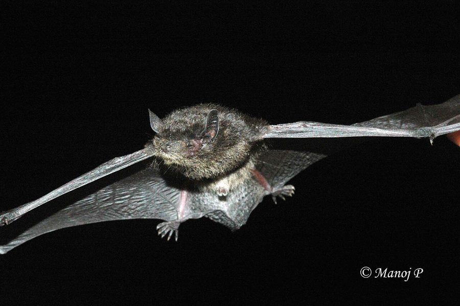

लीस्ट पिपिस्ट्रेलLeast Pipistrelle
Pipistrellus tenuis · Vespertilionidae · MAM-0029

- Scientific name वैज्ञानिक नाम
- Pipistrellus tenuis (Temminck, 1840)
- Family कुल
- Vespertilionidae
- Hindi हिंदी
- लीस्ट पिपिस्ट्रेल
- Local names स्थानीय नाम
- least pipistrelle, pipistrelle
- Status here यहाँ की स्थिति
- native
- Movement आवागमन
- Resident, here all year
- Known from कहाँ दर्ज
- Others have published records from the wider Awadh–Purvanchal plain, none yet from Basti–Ayodhya अवध–पूर्वांचल से दूसरों के प्रकाशित अभिलेख, बस्ती–अयोध्या से अभी नहीं
- IUCN IUCN
- LC
- Review समीक्षा
- audited and independently read
When to look कब देखें
Expected mainly in March, April, May, June, July, August, September, October, November. मुख्यतः मार्च, अप्रैल, मई, जून, जुलाई, अगस्त, सितंबर, अक्टूबर, नवंबर में अपेक्षित।
Uses and possibilities उपयोग और संभावनाएँ
Drawn from the documented uses in the profile below, where each is labelled traditional, current or a research lead. All uses →
Tell it apart from इनसे अलग पहचानें
लीस्ट पिपिस्ट्रेल / Least Pipistrelle
Pipistrellus tenuis (Temminck, 1840) — Vespertilionidae
लीस्ट पिपिस्ट्रेल — भारत की लीस्ट पिपिस्ट्रेल, जिसका वज़न मात्र 3-5 ग्राम होता है। इसका शरीर भूरे या रूसी रंग का होता है। पूर्वी उत्तर प्रदेश के गाँवों में रात को घरों की छतों और पुरानी दीवारों में यह छोटी चमगादड़ उड़ती दिखाई देती है, बहुत ही तेज़ी से मच्छरों, मक्खियों और छोटे कीड़े-मकोड़ों को पकड़ती है। इसकी अल्ट्रासोनिक आवाज़ें मनुष्य को सुनाई नहीं देतीं। रात भर हजारों कीड़े खाकर गाँव के लोगों के लिए वरदान है।
Quick Identification त्वरित पहचान
| Feature | Description |
|---|---|
| Size | India's smallest bat; wingspan 17–22 cm; weight 3–5 g |
| Colour | Pale brown, greyish-brown, or rusty brown dorsally; paler ventrally |
| Wings | Narrow and pointed; relatively short for body size |
| Ears | Small and simple; no prominent tragus |
| Face | Small and delicate; pug-nosed appearance |
| Feet | Very small; claws minute |
| Behaviour | Fast, erratic flier; often seen fluttering around lights; very social |
Field tip: India's smallest bat, no bigger than a large grasshopper. Fast, fluttering flight. Often seen near lights at dusk and dawn. Completely harmless; a mosquito and fly controller.
हिंदी — कैसे पहचानें: लीस्ट पिपिस्ट्रेल, बहुत तेज़ उड़ान, घरों के पास उड़ती है। मच्छरों और मक्खियों खाती है।
Morphology आकारिकी
Biometrics (typical measurements):
| Measurement | Range |
|---|---|
| Head-body length | 3–5 cm |
| Tail length | 2–3 cm |
| Wingspan | 17–22 cm |
| Forearm length | 2.8–3.3 cm |
| Weight | 3–5 g |
Body: Extremely small and delicate. The dorsal fur is pale brown, greyish-brown, rusty brown, or occasionally yellowish-brown. The ventral surface is lighter, pale cream or whitish. The fur is short and sleek, without distinctive markings. There is little sexual dichromatism, though males may be slightly more rufous.
Head and face: Small and delicate with a pug-like nose (hence "pipistrelle" possibly derived from French "pipistrelle" = squeak). Eyes are very small but functional. Ears are small, simple in structure, with no prominent tragus (ear lobe). The tragus is very small and pointed.
Wings: Narrow and pointed, relative to body size, adapted for fast, agile flight. Wing membrane is thin and translucent. The wings are relatively short, providing maneuverability for hunting in cluttered airspace.
Feet and claws: Extremely small. The claws are minute and sharp, adapted for clinging to roosting surfaces.
Tail: Short, extending slightly beyond the tail membrane (uropatagium). The tail is used for maneuvering in flight.
Behaviour & Ecology व्यवहार और पारिस्थितिकी
Swift aerial insectivore. Pipistrellus tenuis is a highly specialized airborne insect hunter, despite its extremely small size.
- Habitat use: Inhabits forests, forest margins, agricultural areas with scattered trees, and human settlements. Roosts in caves, rock crevices, tree holes, old buildings, and roof spaces.
- Roosting behaviour: Highly gregarious, roosting in large colonies (sometimes 100+ individuals) in confined spaces such as roof spaces, window frames, and crevices. Shares roosts with other pipistrelle species.
- Feeding strategy: Hunts by flutter-hunting (fluttering flight) through the air and around vegetation, capturing flying insects (particularly small flies and mosquitoes) one at a time. Can consume 3–4 grams of insects per night, equivalent to its own body weight.
- Activity period: Crepuscular (active at dusk and dawn) but also hunts throughout the night, particularly during moonlit nights. Often attracted to artificial lights where insects congregate.
- Flight characteristics: Fast and erratic flight, with rapid wing beats and quick maneuvering. Can hover briefly and make sharp turns.
- Echolocation: Uses high-frequency ultrasonic echolocation inaudible to humans. The calls are frequency-modulated sweeps.
- Social behaviour: Highly social; roosts and forages in groups. Males may use ultrasonic courtship calls during breeding season.
Life Cycle / Phenology जीवन चक्र
| Season | Event |
|---|---|
| March–May | Emergence from winter torpor; foraging increases; males vocalize |
| May–June | Mating season; females show selective mate choice |
| June–August | Pregnancy and lactation; females form maternal colonies |
| August–September | Young are weaned and capable of independent foraging |
| September–October | Peak feeding; body fattening for winter |
| October–February | Winter torpor; males and non-breeding females in mixed roosts |
Host Plants or Prey आहार
Aerial insectivore diet:
- Primary prey: Small flying insects (Diptera: gnats, midges, mosquitoes; small flies)
- Secondary prey: Small moths, small beetles, small wasps, ants
- Feeding method: Aerial hawking; captures insects in flight using wing or tail membrane; transfers to mouth for consumption while flying
Predators / Natural Enemies शत्रु
- Predatory birds: Small owls (Spotted Owlet, Collared Scops-Owl), hoopoes, and other insectivorous birds
- Snakes: Small tree snakes may raid roosts
- Mammals: Cats (feral and domestic) may catch roosting individuals
- Ectoparasites: Bat bugs, mites, and parasitic flies
- Humans: Sometimes killed through prejudice or habitat disturbance; now protected
Agricultural / Human Relevance कृषि प्रासंगिकता
Exceptional pest controller. Despite its tiny size, Pipistrellus tenuis provides tremendous pest control value to agricultural and urban areas. A single bat consumes hundreds of insects per night, including significant numbers of crop-damaging insects and disease vectors such as mosquitoes. The species is protected under the Wildlife (Protection) Act 1972. Roosting colonies in buildings should be tolerated and protected. The species is completely harmless and beneficial to humans.
Expected Locally स्थानीय रूप से अपेक्षित
Not a field record. Written from published accounts for eastern Uttar Pradesh. No confirmed local sighting yet — if you have seen it, that is what the atlas needs.
अभी तक स्थानीय पुष्टि नहीं। यह विवरण प्रकाशित स्रोतों से है, किसी अवलोकन से नहीं।
This species is NOT a field record. The distribution below is based on published sources describing where Least Pipistrelles should be looked for in the Basti–Ayodhya region and where they have been recorded by mammalogists.
यह प्रजाति स्थानीय अवलोकन नहीं है। यह विवरण प्रकाशित स्रोतों से है।
Expected throughout eastern Uttar Pradesh in villages, agricultural areas, and forests with suitable roosting habitat. GBIF holds published records from the wider Awadh–Purvanchal plain. The species is likely common but easily overlooked due to its small size. Best detected by watching around artificial lights at dusk when insects congregate. Roosts in buildings should be monitored with minimal disturbance. Audio recording of echolocation calls can confirm presence. The first local record would be a clear photograph, audio recording of characteristic calls, or a specimen documented by mammalogists with place, date, and habitat details.
Distribution वितरण
Global range: Widely distributed across South Asia from Pakistan through India, Nepal, and Sri Lanka to Myanmar and Southeast Asia.
In India: Found throughout the subcontinent from the Himalayas to the peninsular lowlands; absent from arid regions.
In Uttar Pradesh: Resident in forested areas, agricultural regions, and human settlements throughout the state; likely common in suitable habitat.
In Basti district / eastern UP: Expected to be common in villages, gardens, and forest areas; likely present year-round, with activity levels varying seasonally.
Research Questions शोध प्रश्न
- What is the population status and colony size variation of Pipistrellus tenuis in eastern UP villages, and how has it changed with building modifications? / क्या घरों की डिज़ाइन में बदलाव से इस चमगादड़ की आबादी पर असर पड़ा है?
- What is the diet composition of Pipistrellus tenuis in agricultural versus urban areas, and how does pest control value vary seasonally?
- Can acoustic monitoring of echolocation calls be used to assess population trends and activity patterns throughout the year?
- क्या कीटनाशकों के इस्तेमाल से इस चमगादड़ की संख्या में कमी आई है?
- What are the roost fidelity patterns and seasonal roost movements of local populations?
- Can community science monitoring of building-roosting populations help document insect control services and changes in bat-human coexistence?
Similar Species मिलती-जुलती प्रजातियाँ
| Species | Key Difference | हिंदी | Field Rule | |
|---|---|---|---|---|
| Pipistrellus coromandra ([[indian_pipistrelle\ | Indian Pipistrelle]]) | Similar size but slightly larger (4–7 g); less rufous coloration; different call frequency | सामान्य चमगादड़ | Indian Pipistrelle is slightly larger and often darker; Least is smaller and more rufous. |
| Pipistrellus mimus (Mimic Pipistrelle) | Slightly larger (5–8 g); reddish-brown coloration; rare and localized | नकल चमगादड़ | Mimic is larger; Least Pipistrelle is the smallest species. | |
| Scotophilus heathii (Asiatic Yellow Bat) | Larger (8–10 g); yellow-olive coloration; larger ears; different calls | पीली चमगादड़ | Yellow Bat is much larger and yellow-colored; Least is tiny and brown. |
Field rule: India's smallest bat, no bigger than a large thumb, with fast fluttering flight often seen around lights is a Least Pipistrelle. If the bat is noticeably larger, it belongs to a different species.
Taxonomy & Classification वर्गीकरण
Original description. The species was described by Coenraad Jacob Temminck in 1840 in Monographies de Mammalogie based on Indian specimens. Type locality is Timor (eastern Indonesia). The original description was based on very limited material, and the Indian populations have since been confirmed to be the same species.
Subspecies. Multiple subspecies are recognised across the Asian range. The Indian populations are typically P. t. tenuis.
Family and order placement. Order Chiroptera, family Vespertilionidae (evening bats). The genus Pipistrellus contains the smallest bats (pipistrelles) found in Europe, Asia, Africa, and Australia.
Phylogenetic notes. Pipistrellus tenuis represents a highly derived, miniaturized form within the genus, with specializations for small prey capture and high-frequency echolocation.
IUCN status rationale. Listed as Least Concern (LC) globally because of its wide geographic distribution, large population sizes, and tolerance of human habitats. The species is not directly threatened, though pesticide use affecting insect prey populations and roost disturbance are potential concerns.
Photo Gallery फोटो गैलरी
No photos yet — add field photos to media/species/least_pipistrelle/ and run node scripts/sync_photos.js.
Wanted photos:
- Roosting individual or colony
- In flight (if possible)
- Size comparison with hand or known object
- Head detail showing small ear
- Hanging from substrate
- Habitat view of typical roost site
- Audio recording of echolocation calls
References संदर्भ
- Temminck, C. J. (1840). Monographies de Mammalogie ou description de quelques genres de mammifères. G. Dufour and E. d'Ocagne, Paris.
- Dobson, G. E. (1878). Catalogue of the Chiroptera in the collection of the British Museum. British Museum, London.
- Laurie, E. M. O. & Hill, J. E. (1954). The Mammals of India: A Systematic Account. British Museum, London.
- Bates, P. J. & Harrison, D. L. (1997). Bats of the Indian Subcontinent. Harrison Zoological Museum, Sevenoaks.
- IUCN Bat Specialist Group (2024). Pipistrellus tenuis. IUCN Red List of Threatened Species. Status: Least Concern.
- GBIF Occurrence Data — Pipistrellus tenuis, South Asia (2026). GBIF taxon key: [to be filled].
Source file: species/fauna/mammals/least_pipistrelle.md